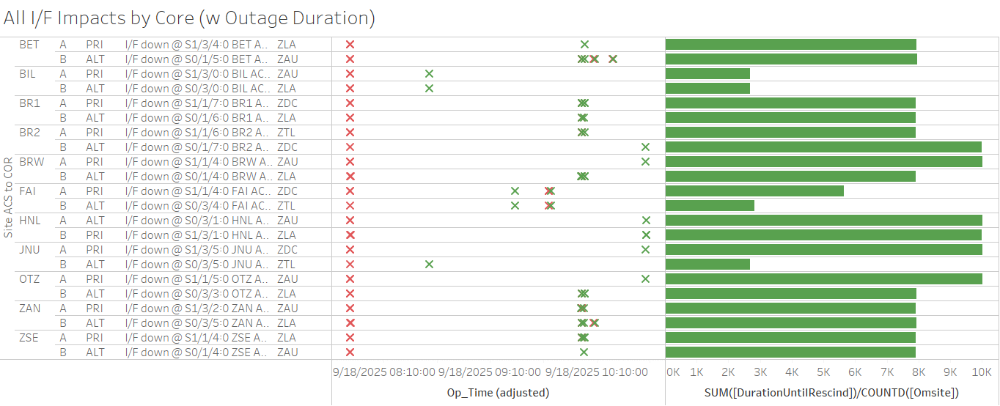

Weekly Highlights 20250917-20250924
9/15 - MTP Power Work
- 9/15 15:03 - MTP WREs to Maintenance and Shutdown
for planned power work to
replace power lines from the electrical substation to the WAAS station and replace UPS backup equipment-- ref LAD 1057398224 - 9/23 18:53 - MTP WRS power restored; WRE-C
restored to Normal at 9/23 19:11
- MTP PCU-A failed after power restored; tech swapped PCU-B to WRE-A but PCU-B has a known issue with the DC so there's no power to the Antenna
- New PCU-A can power ACS-A Router, so it still serves a purpose
- Only WRE-C is active at MTP -- the other two WREs are down with PCU Failures...
9/17 - ZDC C&V Fault
- 9/17 08:27 - ZDC C&V Faulted from Normal with SE 734 CV Degraded Fault; SM9 GEO automatically transitioned from ZDC->ZTL CV Selected Source; Reset ZDC CV Subsystem, Copied Warm Start, Restarted then Verified to Normal at 9/17 11:49
- 9/18 12:12 - SM9 GEO change Selected Source CV from ZTL->ZDC
9/17 - Widespread Comm Outage
- 9/17 14:40 - Widespread comm outage affecting ZTL
and ZDC comms;
ISR 0917-0339 - higher level outage-- ref LIR 1164282332; circuits looped...- 9/17 17:29 - Operator Action to Reset ZTL COR-A; ZTL-ZDC Ring 1 PRI/ALT + ZTL-ZLA Ring 1 ALT comms down hard; lines cleared at 9/17 17:37 (~443 seconds)
- 9/17 18:03 - Operator Action to Reset ZTL COR-B; ZTL-ZDC Ring 2 PRI/ALT + ZTL-ZLA Ring 2 PRI comms down hard; lines cleared at 9/17 18:11 (~429 seconds)
- 9/17 18:46 - All looped comm lines cleared (~14783 seconds)
- 9/17 19:08 - All previous comms looped again; several lines cleared at 9/17 19:38 (~1789 seconds)
- 9/17 19:50 - Comms looped again;
lines cleared at 9/17 22:36
(~9941 seconds) -- SE
738 CV-GUS Comm Failed for AP1
- 9/17 23:12 - Comms looped again; lines cleared at 9/17 23:42 (~1798 seconds)

9/18 - Widespread Comm Outage (Northwest)
- 9/18 07:50 - Widespread comm outage affecting sites in the Northwest and Alaska; all comms cleared by 9/18 10:37 (~10000 seconds)

9/18 - CM1 Intrusive Maintenance
- 9/18 14:36 - DX1 to Maintenance by mistake; verified back to Backup at 9/18 14:44
- 9/18 14:45 - CM1 to Maintenance for
intrusive maintenance on KPA, annual PM,C5 upconverter att. ajustment, and Dehydrator line inspection.-- ref LIR 1035792424; Control Powered and restored to Backup at 9/18 22:31
9/19 - MPR WRS Outages
- 9/19 23:50 - MPR WREs A/C went to No Data Reported
(WRE-B already offline); apparent power outage
at site -- ref LCM
1059588524; restored to Normal
at 9/20 02:37
- 9/20 04:32 - Another MPR outage occurred; restored to Normal at 9/20 05:23
- 9/20 14:58 - Final MPR outage; restored to Normal at 9/20 17:07
- 9/21 04:26 - MPR WRE-B Control Powered OFF...
9/20 - MMD WRE-B Subframe Reasonability
- 9/20 21:17 - MMD WRE-B alarmed with SE 728 Subframe Reasonability and PID WRS DOWN -- ref LIR 1059639524
9/22-24 - ZOA WRE-B Fault
- 9/22 15:27 - ZOA WRE-B Faulted with SEs 52,53,59; Control Powered and restored to Normal at 9/22 16:56
- 9/24 05:14 - ZOA WRE-B Faulted with SEs 52,53,59 -- Freq Std Alarm Code xF3 - Ionizer Filament; Control Powered and restored to Normal at 9/24 06:57
9/23 - ZTL C&V No Data Reported
- 9/23 01:42 - ZTL C&V alarms with No Data
Reported; G30-135 GEO Selected Source CV
automatically changed from ZTL->ZLA
concurrent with the following SEs
- SE 500 Comm Status change to ZTL CV
- SE 740 Time to Alarm Exceeded 135 (TTL) SE 756 Message Type 0
- SE 741 CV Stats AP1 GUS 100%
- SE 738 CV-GUS Comm Fails
- Comm Faults for ZTL COR-A lasting ~18 seconds
- 9/24 10:28 - G30-135 GEO Selected Source CV changed from ZLA->ZTL to restore split selected sources
L1/L2 Bias Errors
9/23 - Widespread L1/L2 Bias Errors apparently associated with ZTL CV No Data Reported

Various Comm Impacts
* Only captures major / long-term comm outages
CM1 Comms
- 9/17 18:55 - CM1 Ring 2 PRI comms flapping (also affected by widespread comm outage above); last event cleared at 9/17 22:03 (~86 seconds)
- 9/18 15:32 - CM1 Ring 2 PRI comms flapping; last event cleared at 9/18 23:48 (~1878 seconds total)
- 9/19 17:00 - CM1 Ring 2 PRI comms flapping; last event cleared at 9/18 22:25 (~307 seconds total)
- 9/22 16:35 - CM1 Ring 2 PRI comms flapping; last event cleared at 9/22 21:59 (~606 seconds total)
- 9/23 17:05 - CM1 Ring 2 PRI comms flapping; last event cleared at 9/23 22:23 (~2165 seconds total)
- 9/24 16:26 - CM1 Ring 2 PRI comms flapping...
Other Sites
- 9/17 03:47 - CDB Ring 2 comms flapping; last event cleared at 9/17 03:55 (~211 seconds total)
- 9/17 04:07 - ZLA-POC COR-OAC Ring 1 PRI / Ring 2
ALT comms down hard;
ISR 0917-0480/0481 ZLA WCNS<->SCT POC Net1 PRI and Net2 ALT OTS-- ref LIR 1058403124; lines cleared at 9/17 06:48 (~9632 seconds) - 9/17 06:18 - CDB Ring 2 comms flapping; last event cleared at 9/17 06:22 (~170 seconds total)
- 9/17 09:46 - ZLA-POC COR-OAC Ring 1 PRI / Ring 2 ALT comms down hard; lines cleared at 9/17 09:48 (~129 seconds)
- 9/17 20:38 - CDB Ring 2 comms flapping; last event cleared at 9/17 22:00 (~1145 seconds total)
- 9/19 00:00 - ZTL-ZLA Ring 2 PRI comms down hard;
line cleared at 9/19 03:09 (~11211
seconds); back down hard at 9/19
03:10...
- 9/19 15:37 - ZLA COR-B Reset; back up at 9/19 15:45 (~449 seconds)
- 9/20 00:06 - ZTL-ZLA Ring 2 PRI comms cleared then back down hard ~20 seconds later...
ISR 0919-0049 - FTI circuit was confirmed good up to the SDP. Issue is from SDP to equipment.-- ref LIR 1059258224- 9/23 15:02 - Control Power OFF / ON ZLA COR-B; downed lines not cleared...
- 9/24 19:02 - Some action taken at ZLA
Comm Node --
ZLA COMM site tech/SB exercise the cable and line cleared; following lines cleared:- 9/24 19:02 - ZTL-ZLA Ring 2 PRI comms cleared (~413875 seconds)
- 9/19 02:07 - BRW Ring 2 ALT comms down hard;
line came back to flapping at 9/19 02:13
(~309 seconds); back down hard at
9/19 02:15...
- 9/20 00:05 - BRW Ring 2 ALT comms cleared then back down hard ~20 seconds later...
FTI circuit was confirmed good up to the SDP. Issue is from SDP to equipment.-- ref LIR 1059273024- 9/24 19:02 - Some action taken at ZLA
Comm Node --
ZLA COMM site tech/SB exercise the cable and line cleared; following lines cleared:- 9/24 19:09 - BRW Ring 2 ALT comms cleared (452857 seconds)
- 9/21 15:41 - MMD Ring 1 comms down hard; line cleared at 9/21 15:50 (~9m 55s)
- 9/22 07:36 - ZLA-POC Ring 1 PRI / Ring 2 ALT comms
down hard...
- 9/22 11:42 - ZLA COR-B Reset
- 9/22 12:03 - ZTL COR-B Reset
ISR 0922-0676 - The circuit shows down after, will request FTI escalate to SLE involvement to assist the ZLA WAAS qualified tech-- ref LIR 1060266224- 9/23 04:10 - ZLA-POC Ring 1 PRI / Ring 2 ALT comms cleared (~74059 seconds), then back down ~20 seconds later...
- 9/23 04:14 - ZLA-POC Ring 1 PRI / Ring 2 ALT comms cleared (~238 seconds)
- 9/24 04:28 - ZOB Ring 2 PRI comms down hard; line cleared at 9/24 05:23 (~3301 seconds)
- 9/24 04:34 - ZOB Ring 1 ALT comms down hard; line cleared at 9/24 06:46 (~7935 seconds)
- 9/24 06:02 - HNL Ring 1 ALT / Ring 2 PRI comms down hard; both lines cleared at 9/24 07:01 (~3540 seconds)
- 9/24 14:30 - YFB Ring 1 comms down hard; line cleared at 9/24 15:15 (~2684 seconds)
- 9/24 15:35 - YFB Ring 1 comms down hard; line cleared at 9/24 15:57 (~1330 seconds)
7/21/25 YYR Ring 1 Comms
- 7/21 11:44 - YYR Ring 1 comms flapping with extended outages... -- ref LIR 1020579524
- 7/21 14:50 - YYR Ring 1 comms down hard...
- 7/30 -
SATCOM issue YYR<->QWE. YYR tech found broke cable connector on back of receive modem. researching part. - 8/20 Remark: Noted increase of L1/L2 Bias Errors for YYR and frequent flaps to No Data Reported...
11/6/24 YFB Ring 2 Down Hard...
YFB requires satcom upgrades by NavCanada to restore... ref LIR 892056924
- 11/6/24 18:48 - YFB Ring 2 down hard... both rings to YFB down hard...
5/11/23 Mexico Ring 2 Down Hard...
- 5/11/23 17:01 - MX Ring 2 SatCom upgrade begins; MX Ring 2 OFFLINE until upgrade troubleshooting is complete...
- Targeting network upgrade in CY26
List of current offline WREs
List of current offline WREs -- ref WAAS Status Monitor
All Depot shipments to Mexico are halted until the customs process can be finalized
Currently working to assess MX Inventory to determine equipment refresh and restoration needs...
- MTP WRE-A - 9/23/25-... - PCU Failed after power outage; PCU-B swapped into WRE-A but DC output is non-functional... ref LAD 1060696524
- MMD WRE-A - 3/31/25-... - Freq Std failed -- ref LIR 953873324
- MTP WRE-B - 11/18/24-... - Receiver inits failing -- ref LIR 898330924
- MMX WRE-A - 10/13/24-... - Freq Std failed -- ref LAD 879853824
- MPR WRE-B - 5/3/24-... - Inits failing -- looks like a bad freq std; due to shipping issues, there is no spare Freq Std and no ETA to recover WRE-B... -- ref LIR 44170821

Major Events


Core I/F Status

Comm Events

Mexico Comm Status